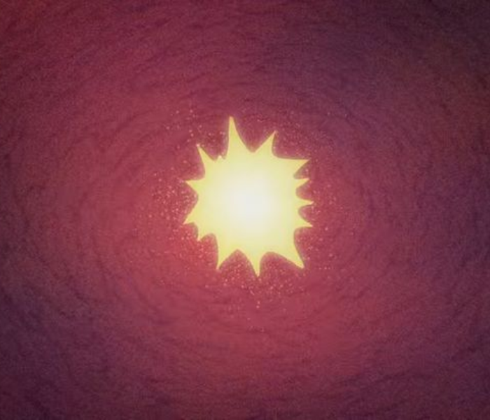
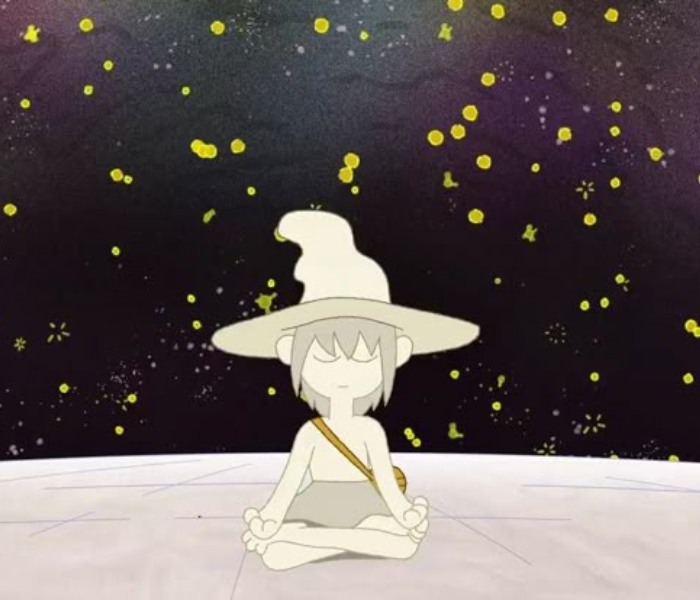
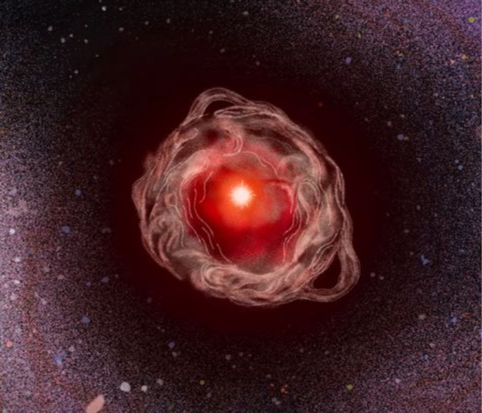
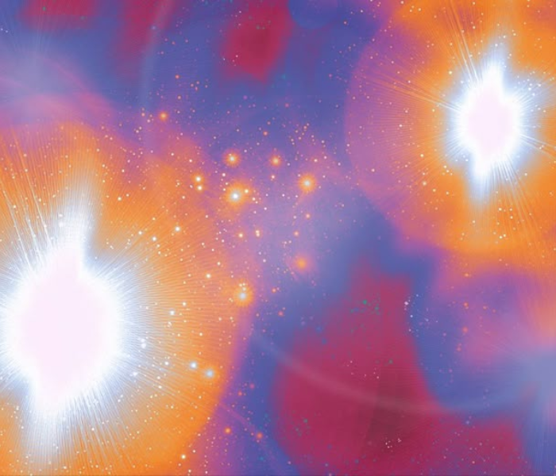
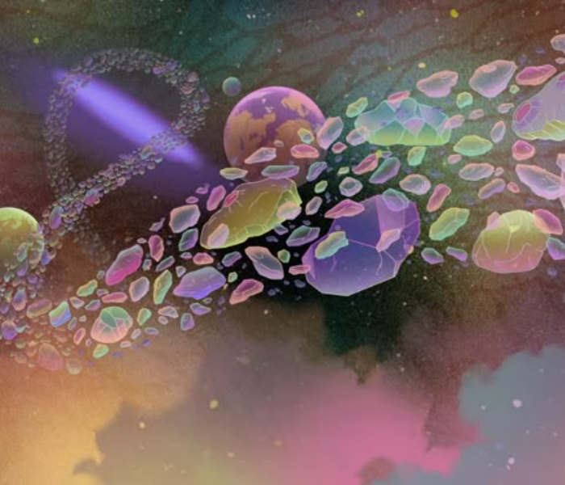
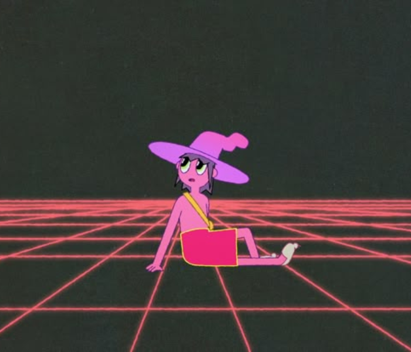

MUERTE
No como un final trágico, sino como una transición natural. La serie invita a cuestionar nuestros miedos hacia ella y propone una relación más íntima, espiritual y compasiva con el morir.

“Aceptar la muerte es aceptar la vida.”
CONCIENCIA
Experiencia subjetiva de estar despierto y ser consciente del entorno y de uno mismo.

“La conciencia no es solo un fenómeno biológico, es el misterio más profundo.” — David Chalmers
MEDITACION
Técnica para calmar la mente y expandir la conciencia.

“La meditación es la llave para entrar en la verdadera libertad.” — Thich Nhat Hanh
EGO
: La construcción mental del “yo” que puede separar y crear sufrimiento.

“El ego es un falso sentido del yo, la verdadera esencia está más allá.” — Eckhart Tolle
DUALIDAD
División entre opuestos y la búsqueda de la unidad.

“El Yin y el Yang no son opuestos, sino complementarios.” — Taoísmo
DESAPEGO
Soltar la identificación con cosas para alcanzar la libertad.

Soltar la identificación con cosas para alcanzar la libertad.
ALMA
La esencia inmortal que trasciende el cuerpo físico.
“El alma es la luz que nunca se apaga.” — Platón
EXISTENCIA
Reflexión sobre el sentido y propósito de la vida.

“La vida no tiene sentido, somos nosotros quienes le damos sentido.” — Jean-Paul Sartre